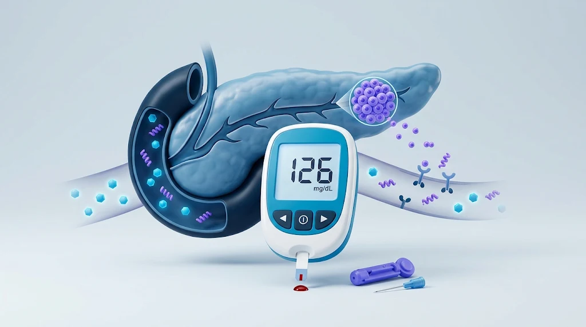

Enfermedades endocrinas y metabólicas
Diabetes tipo 2: factores de riesgo y prevención
Aprende qué es, cómo se detecta, qué complicaciones puede tener y cómo prevenirla y controlarla.

¿Qué es la diabetes tipo 2?
La diabetes tipo 2 es una enfermedad crónica en la que el organismo no utiliza adecuadamente la insulina (resistencia a la insulina) y, con el tiempo, puede no producir suficiente cantidad para mantener la glucosa en sangre dentro de valores normales. Esto provoca hiperglucemia que, si persiste, puede dañar diferentes órganos y tejidos.[1]
Es la forma más frecuente de la enfermedad: más del 95 % de las personas con diabetes tienen tipo 2. Se diferencia de la diabetes tipo 1, que se caracteriza por una producción deficiente de insulina y requiere su administración diaria.[1]
Según la OMS, el número de personas con diabetes pasó de 200 millones en 1990 a 830 millones en 2022, y más de la mitad no tomaba medicación para su diabetes.[1] La buena noticia es que la diabetes tipo 2 con frecuencia puede prevenirse o retrasarse con cambios en el estilo de vida.[1]
Causas y factores de riesgo
La diabetes tipo 2 no tiene una única causa. Entre los factores que contribuyen a su aparición se encuentran el sobrepeso, la falta de ejercicio y la genética.[1]
Factores no modificables:
- Antecedentes familiares de diabetes (componente genético).
- Edad: el riesgo aumenta con los años, por eso se recomienda realizar pruebas de detección a partir de los 35 años.[3]
- Diabetes gestacional previa: las mujeres que la tuvieron presentan mayor riesgo de desarrollar diabetes tipo 2 en el futuro.[1]
Factores modificables:
- Sobrepeso y obesidad.
- Falta de actividad física.
- Alimentación poco saludable, con exceso de azúcares y de grasas saturadas.[1]
- Consumo de tabaco: aumenta entre un 30 % y un 40 % el riesgo de desarrollar diabetes tipo 2 en comparación con las personas que no fuman. Dejar de fumar es una medida importante para reducir este riesgo.[4]
Las personas con prediabetes (niveles de glucosa más altos de lo normal, pero por debajo de los que definen la diabetes) tienen un riesgo elevado de progresar a diabetes tipo 2, aunque esto no es inevitable.[1]
¿Cuáles son los síntomas?
En la diabetes tipo 2 los síntomas pueden ser leves y tardar años en notarse. Por eso, la enfermedad a veces se diagnostica varios años después de su inicio, cuando ya han aparecido complicaciones.[1]
Entre los síntomas que pueden presentarse están:[1]
- Mucha sed.
- Necesidad de orinar con más frecuencia de lo habitual.
- Visión borrosa.
- Cansancio.
- Pérdida de peso sin causa aparente.
Tener alguno de estos síntomas no confirma la diabetes, y no tenerlos tampoco la descarta. La única forma de detectarla es mediante análisis de sangre.[1]
Cuándo buscar atención urgente: si presentas sed intensa y orinas con mucha frecuencia junto con vómitos, dolor abdominal, respiración rápida, somnolencia o confusión, acude de inmediato a un servicio de urgencias.
Complicaciones de la diabetes no controlada
Con el tiempo, la glucosa elevada puede dañar los vasos sanguíneos del corazón, los ojos, los riñones y los nervios. La diabetes puede causar ceguera, insuficiencia renal, infarto de miocardio, accidente cerebrovascular y amputación de miembros inferiores.[1]
- Ojos: el daño de los vasos sanguíneos de la retina puede causar pérdida permanente de la visión.
- Pies: el daño de los nervios y la mala circulación pueden provocar úlceras que, en casos graves, llevan a la amputación.
- Corazón y vasos sanguíneos: mayor riesgo de infarto y accidente cerebrovascular.
- Riñones: mayor riesgo de insuficiencia renal.
Un buen control de la glucosa y de otros factores de riesgo, junto con los exámenes periódicos y el tratamiento oportuno, puede reducir el riesgo de estas complicaciones o retrasar su aparición.[1][4]
¿Cómo se diagnostica la diabetes tipo 2?
El diagnóstico se realiza con análisis de sangre hechos en laboratorio. Según los Estándares de Atención de la Asociación Americana de Diabetes (ADA) 2026, se diagnostica diabetes cuando se cumple alguno de estos criterios:[3]
- Hemoglobina glucosilada (HbA1c): 6,5 % o más.
- Glucosa en ayunas (al menos 8 horas sin comer): 126 mg/dL o más.
- Glucosa a las 2 horas de una prueba de tolerancia oral a la glucosa (con 75 g de glucosa): 200 mg/dL o más.
- Glucosa al azar: 200 mg/dL o más, en una persona con síntomas clásicos de hiperglucemia.
En ausencia de síntomas claros, el resultado debe confirmarse con una segunda prueba. Un glucómetro de uso doméstico no sirve para diagnosticar la diabetes.[3]
Prediabetes
Se habla de prediabetes cuando los valores están elevados pero por debajo del umbral de diabetes:[3]
- HbA1c entre 5,7 % y 6,4 %.
- Glucosa en ayunas entre 100 y 125 mg/dL.
- Glucosa a las 2 horas de la prueba de tolerancia entre 140 y 199 mg/dL.
La prediabetes es una señal de alerta: con cambios en el estilo de vida muchas personas pueden retrasar o evitar la diabetes tipo 2.[1]
¿A quién se le recomienda hacerse la prueba?
- A todos los adultos a partir de los 35 años. Si el resultado es normal, se recomienda repetirla al menos cada 3 años.
- A cualquier edad, si hay sobrepeso u obesidad y al menos un factor de riesgo adicional (por ejemplo, antecedentes familiares o prediabetes).
- Anualmente, a las personas con prediabetes.
Estos criterios son los de la ADA.[3] Algunas condiciones, como la anemia o el embarazo, pueden alterar la HbA1c; en esos casos el médico puede preferir otras pruebas.
Tratamiento y prevención
La diabetes tipo 2 puede tratarse con alimentación saludable, actividad física y medicamentos, y sus consecuencias pueden evitarse con exámenes periódicos para detectar complicaciones y tratamiento oportuno.[1]
¿Qué cifras se buscan?
Las metas se individualizan según la edad, el tiempo con la enfermedad, las enfermedades asociadas y el riesgo de hipoglucemia. Como referencia, para muchos adultos la ADA propone una HbA1c menor de 7 %, con objetivos más estrictos o más flexibles en algunas personas.[2] Tu médico definirá cuál es la meta adecuada para ti.
Medidas de estilo de vida
Según la OMS, para prevenir o retrasar la diabetes tipo 2, y para ayudar a controlarla, se recomienda:[1]
- Alcanzar y mantener un peso saludable.
- Mantenerse físicamente activo: al menos 150 minutos de ejercicio de intensidad moderada por semana, según la capacidad de cada persona.
- Llevar una alimentación saludable: limitar el azúcar y las grasas saturadas.
- No consumir tabaco.
Un profesional de la nutrición puede ayudarte a adaptar el plan de alimentación a tus necesidades y preferencias.
Tratamiento farmacológico
Algunas personas con diabetes tipo 2 necesitarán medicamentos para controlar la glucosa, que pueden incluir insulina u otros fármacos. Entre los ejemplos están la metformina, las sulfonilureas y los inhibidores del cotransportador sodio-glucosa tipo 2 (SGLT2).[1]
Las guías de la ADA 2026 indican que, en personas con enfermedad cardiovascular, insuficiencia cardíaca o enfermedad renal crónica, o con alto riesgo de ellas, el tratamiento debe incluir fármacos con beneficio demostrado para el corazón y los riñones (como ciertos inhibidores de SGLT2 y agonistas del receptor de GLP-1), independientemente de la HbA1c. Algunos de ellos también ayudan a bajar de peso.[2]
Además de los fármacos para bajar la glucosa, muchas personas con diabetes necesitan medicamentos para controlar la presión arterial y estatinas para reducir el riesgo de complicaciones.[1]
Algunos medicamentos, como la insulina y las sulfonilureas, pueden causar hipoglucemia (glucosa demasiado baja), con síntomas como temblor, sudoración, hambre repentina o confusión. Si el tratamiento incluye alguno de ellos, pregunta a tu médico cómo reconocerla y qué hacer.
La elección del medicamento depende de las enfermedades asociadas, la función renal, el riesgo cardiovascular, el peso, el riesgo de hipoglucemia y las características de cada paciente.
Seguimiento y control de complicaciones
El seguimiento incluye controlar la glucosa según indique el equipo de salud, y realizar exámenes de los ojos (para detectar retinopatía), pruebas de la función de los riñones y revisión de los pies.[1]
Importante: no se deben iniciar, suspender ni modificar los medicamentos para la diabetes sin consultar previamente con el profesional responsable de la atención.
¿Cuándo consultar al médico?
- Si tienes 35 años o más y nunca te has hecho una prueba de glucosa.
- Si tienes sobrepeso u obesidad, antecedentes familiares de diabetes, prediabetes o diabetes gestacional previa, para valorar tu riesgo y las pruebas que necesitas.
- Si presentas sed excesiva, orinas con mucha frecuencia, tienes visión borrosa, cansancio persistente o pierdes peso sin explicación.
- Si ya tienes diabetes y tienes dudas sobre el tratamiento, cifras que no se controlan o efectos molestos de los medicamentos.
- Si aparecen heridas en los pies que no cicatrizan, cambios en la visión o pérdida de sensibilidad en manos o pies.
- De inmediato, si presentas los síntomas de alarma descritos en la sección de síntomas.
Aviso: este artículo tiene fines informativos y no sustituye la valoración de un profesional de salud. No aborda la diabetes tipo 1, la diabetes gestacional ni la diabetes en niños, que requieren un enfoque específico.
Referencias científicas
- Organización Mundial de la Salud. Diabetes [Internet]. Ginebra: OMS; 3 de noviembre de 2026 [consultado el 8 de noviembre de 2026]. Disponible en inglés. Ver documento original.
- American Diabetes Association Professional Practice Committee. Standards of Care in Diabetes—2026. Diabetes Care. 2026;49(Suppl 1). Ver documento original.
- American Diabetes Association Professional Practice Committee. 2. Diagnosis and Classification of Diabetes: Standards of Care in Diabetes—2026. Diabetes Care. 2026;49(Suppl 1). doi:10.2337/dc26-S002. Ver documento original.
- Organización Panamericana de la Salud. World Diabetes Day 2025: key facts about diabetes [Internet]. Washington, D.C.: OPS/OMS; 2025 [consultado el 8 de noviembre de 2026]. Disponible en inglés. Ver documento original.